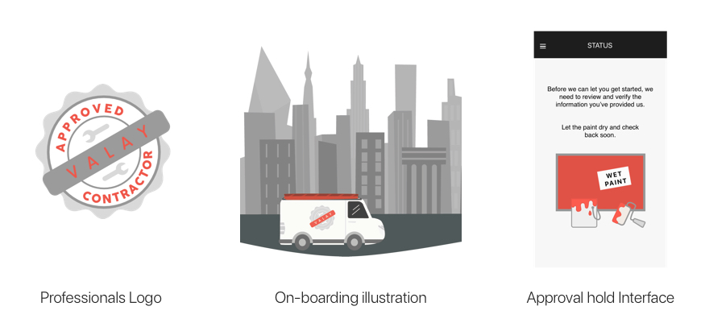
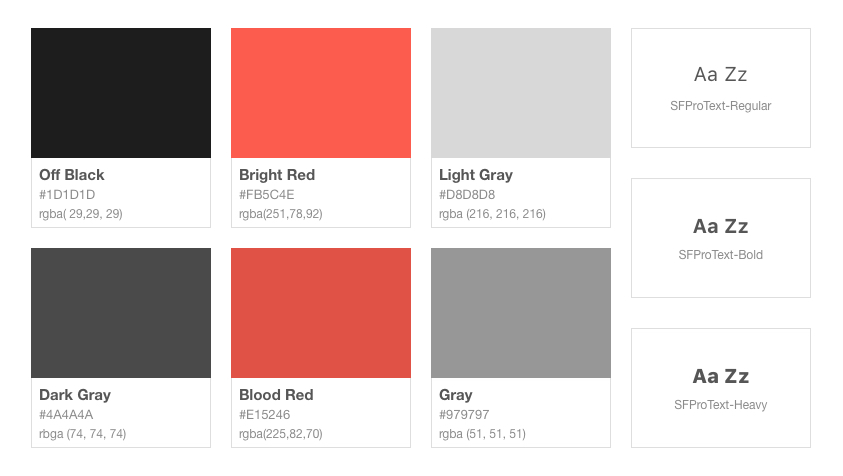

Valay Brand Design

Problem
Valay was a Service focused mobile app, providing users the opportunity to find professional home/repair services within minutes. They wanted to convey a level of professionalism and seriousness, while also being light and fun. Their existing visual identity was sending the first half of the message. The team didn't exactly have a set visual identity for the brand or style for their app's interface that matched.
They were in need of a customized interface solution that fit their personal approach to a professional service. This included building onto brand identity and creating a style guide that would unify all of the existing interface elements.
Role
As the UI Designer, I worked on developing/modifying interfaces, developing visuals for promotional use on mobile/web. I as well created illustrations for several experiences(think onboarding) and produced icons used on the central dashboard and throughout the app.
Solution
As my role spanned a series of a few months, I was able to touch on almost every visual element of the brand and to help strengthen their goal of providing professional services in a more relaxed way.
My approach was to create a friendly visual language softening the visuals, colors, digital illustrations, branding components, and the mobile/web interfaces.
Approach
To get a solid foundation of work I focused on first developing a softer color palette of reds/whites/blacks, along with a style guide and appending to it as new elements were introduced into a master Sketch a file.
In creating a visual guideline for the brand, I was able to speed up the interface process, logo creation, and illustrations to overall add to the trustworthy feel of the app.
Learnings
I wish I knew about design systems at the time of this project. Knowing about them now I probably would have started on developing that first. But in taking a long way around, I was able to improve my design and illustrations skills and form the brand's visual identity.
Though not visible here I learned a lot about intentions from working with team members with different areas of focus. I discovered how to unpackage feedback into actionable items on projects. I also learned how to work with our developers to help their process go more smoothly by sharing specs in more accessible formats.